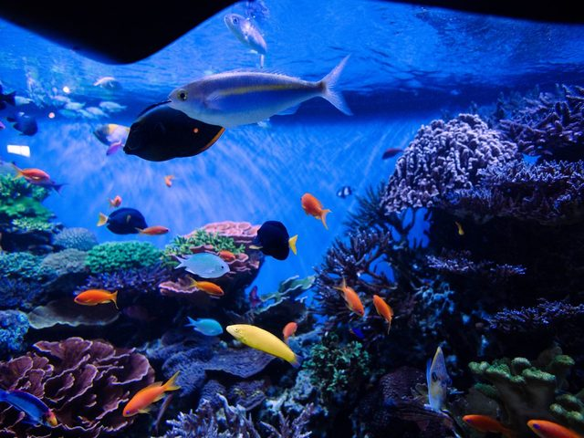
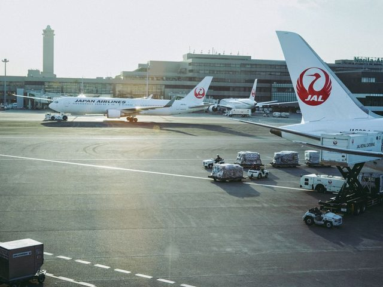
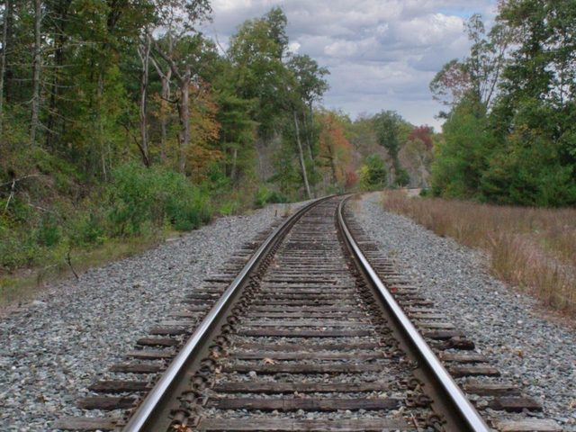
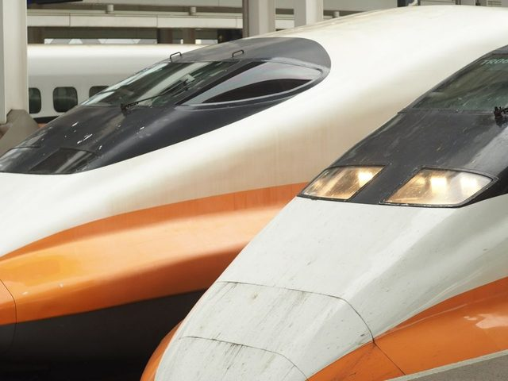

UNIT 18 · VOCABULARY
交通運輸
Transportation
20 個單字聽・唸・用
本單元單字一覽
交通工具、車站、道路和乘車用語，共 20 個。注意 overpass（天橋）↔ underpass（地下道）。
ambulancehelicopterjeeptankairlinebus stopparking lottrain stationflat tirehighwayMRToverpasspassengerpathplatformrailroadrailwaysubwayunderpasswheel
每個字都有 🔊，先聽發音、跟著唸，再看例句。
單字 1–4

ambulance
救護車n.
Call an ambulance! Someone is hurt.
叫救護車！有人受傷了。
叫救護車！有人受傷了。

helicopter
直升機n.
The helicopter landed on the roof of the hospital.
直升機降落在醫院屋頂上。
直升機降落在醫院屋頂上。

jeep
吉普車n.
We rode a jeep up the mountain.
我們坐吉普車上山。
我們坐吉普車上山。

tank
坦克；水箱；油箱n.
We have three goldfish in our fish tank.
我們的魚缸裡有三條金魚。
我們的魚缸裡有三條金魚。
單字 5–8

airline
航空公司n.
Which airline are you flying with?
你搭哪一家航空公司？
你搭哪一家航空公司？

bus stop
公車站n.
I'll wait for you at the bus stop.
我在公車站等你。
我在公車站等你。

parking lot
停車場n.
The parking lot is full today.
今天停車場滿了。
今天停車場滿了。

train station
火車站n.
Let's meet at the train station at nine.
我們九點在火車站見。
我們九點在火車站見。
單字 9–12

flat tire
爆胎；輪胎沒氣n.
We got a flat tire on the way home.
我們回家路上爆胎了。
我們回家路上爆胎了。

highway
公路；高速公路n.
Cars drive fast on the highway.
車子在高速公路上開得很快。
車子在高速公路上開得很快。

MRT
捷運（大眾捷運系統）n.
I take the MRT to school every day.
我每天搭捷運上學。
我每天搭捷運上學。

overpass
天橋；陸橋n.
Use the overpass to cross the busy road.
走天橋過這條車很多的馬路。
走天橋過這條車很多的馬路。
單字 13–16

passenger
乘客n.
All passengers must wear seat belts.
所有乘客都必須繫安全帶。
所有乘客都必須繫安全帶。

path
小路；小徑n.
Follow the path to the lake.
沿著小路走到湖邊。
沿著小路走到湖邊。

platform
月台；講台n.
The train to Kaohsiung leaves from Platform 2.
往高雄的火車從第二月台出發。
往高雄的火車從第二月台出發。

railroad
鐵路n.
The railroad runs along the coast.
這條鐵路沿著海岸走。
這條鐵路沿著海岸走。
單字 17–20

railway
鐵路；鐵道n.
Taiwan High Speed Railway is very fast.
台灣高鐵非常快。
台灣高鐵非常快。

subway
地鐵n.
You can take the subway to the museum.
你可以搭地鐵去博物館。
你可以搭地鐵去博物館。

underpass
地下道n.
There are many small shops in the underpass.
地下道裡有很多小商店。
地下道裡有很多小商店。

wheel
輪子；方向盤n.
A bicycle has two wheels.
腳踏車有兩個輪子。
腳踏車有兩個輪子。
過馬路：上面還是下面
| 字 | 意思 |
|---|---|
| overpass | 天橋（從上面過） |
| underpass | 地下道（從下面過） |
| crosswalk | 斑馬線 |
over 在上、under 在下；pass 通過。
各地的「地鐵」
| 地方 | 說法 |
|---|---|
| 台灣 | MRT |
| 美國 | subway |
| 英國倫敦 | the Underground |
快問快答：中文 → 英文
1救護車ambulance
2直升機helicopter
3吉普車jeep
4坦克；水箱；油箱tank
5航空公司airline
6公車站bus stop
7停車場parking lot
8火車站train station
快問快答：英文 → 中文
1flat tire爆胎；輪胎沒氣
2highway公路；高速公路
3MRT捷運（大眾捷運系統）
4overpass天橋；陸橋
5passenger乘客
6path小路；小徑
7platform月台；講台
8railroad鐵路
學完了！接下來
複習方法
review
- 回到「📗 單字卡」，按「遮中文」自己考自己
- 再按「遮英文」，看中文說出英文
- 每個例句跟著 🔊 唸一次
準備好了
- 按右上角「📝 前往測驗」
- 測驗錯的題目要訂正到全對
- 訂正完成補送 1 點